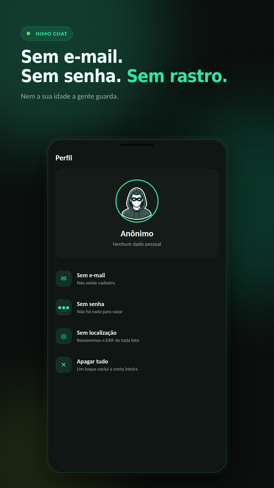

8 de setembro de 2026
Chat anônimo sem cadastro: como funciona e é seguro usar?
Sem e-mail, sem senha, sem telefone guardado. Como o pareamento do Nimo Chat funciona e o que "seguro" quer dizer sem conta nenhuma.
Leia mais